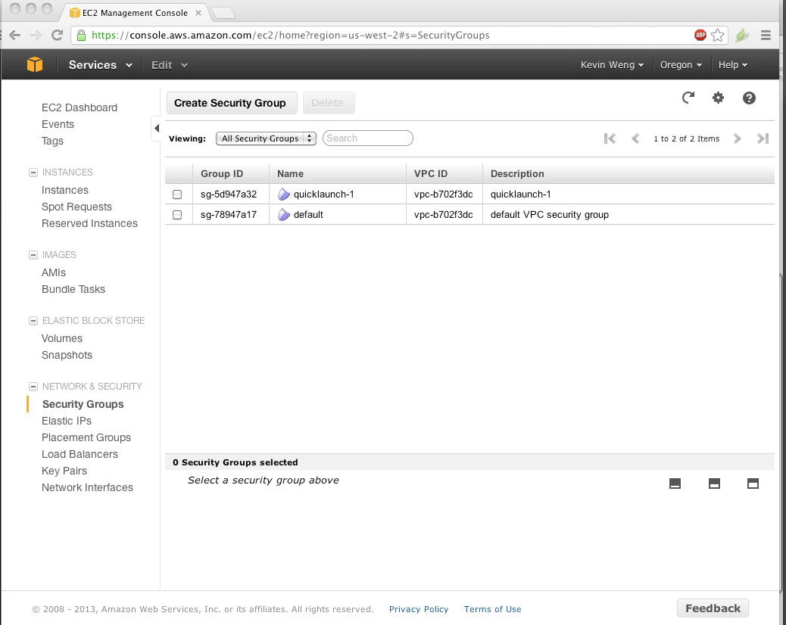
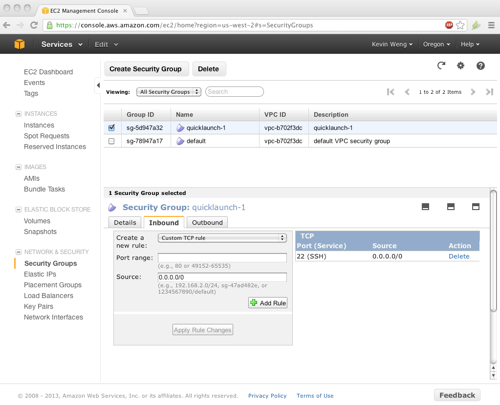
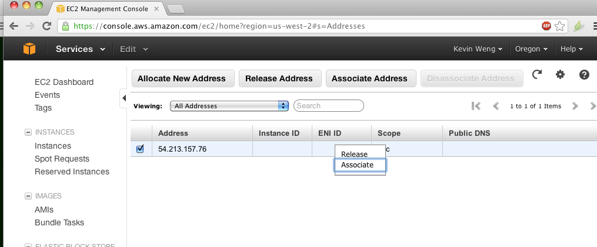
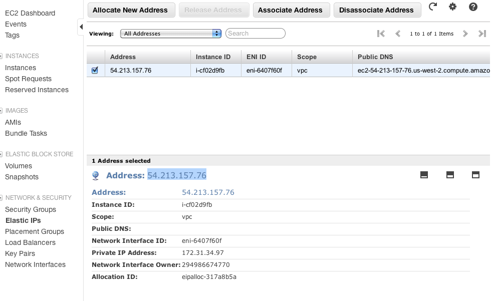
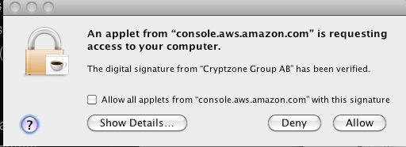
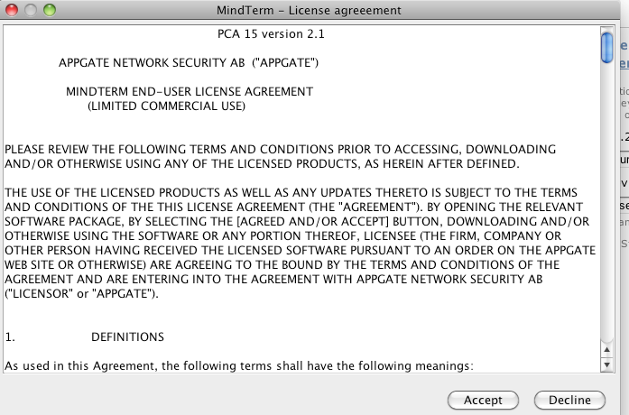
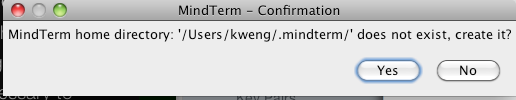
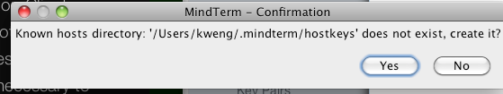

Acoustic Server Installation: AWS Setup
Kevin Weng
Note:The Amazon setup guides are here: https://aws.amazon.com/documentation/ if you need further reference.
- Set up an account at http://aws.amazon.com/.
You have to enter a credit card, but you can create a micro-instance, and run it for a year for free.
-
Launch the AWS Management Console.
-
Sign in. You'll see this:

-
Click on "EC2".
-
Click on "Launch Instance".
-
Click "Quick launch wizard".
-
Select "Ubuntu Server 12.04.2 LTS for Cluster Instances".
-
Click "download".
-
This is a permission file that you will need to upload on every use of AWS. Save in a safe place and don't lose it.
For this example, our file is located at:
"/Users/kweng/data/PFRPLAB/projects/acoustic_geolocation_tool/AWS_ubuntu/Kevin_ubuntu_1.pem".
-
Click "continue".
-
You'll see:

-
Click "Launch".

-
Click "Close".
-
You need to set the security group, so take note of the name of the security group for this instance.
In this example it is "quicklaunch-1". Look for this at the bottom of the screen (scroll down in the section at the bottom pane).

-
On the left side, click on "security groups".

-
Click on the box for the line with the appropriate name.
Go to bottom pane, click "inbound" tab.

-
Create a new rule, pull down and select "HTTP".
-
Hit "add rule" and then "apply rule changes".
-
Then you should see (note that a new line has appeared under TPC Port (Service):

-
Click "Elastic IPs".
-
Click "Allocate new address".
-
Click "Yes, allocate".
-
Now go to top section of page, right click on light blue line with your IP address, and hit "associate".

-
Select the instance (there should only be one, unless you have installed other instances on your AWS).

-
Click "Yes, associate".
-
Copy the IP address you see here (ours is 54.213.157.76):

-
Click "instances" on left pane.
-
Right click on the light blue line and hit "connect".

-
You'll see:

-
Find where you put the permission file and copy the path.
Paste it into the "private key path" box.
You may wish to click "save key location". Doing so saves the path so you don't have to copy paste in the future.
-
Click "Launch SSH Client".
-
Allow Java to run.
-
If you are using a mac you might see this (Allow it):

-
Read and accept the EULA.

-
Several prompts will appear, Click Accept/Allow/Yes in all of them.


-
If successful you'll get a command line box:

-
Your AWS setup is now complete.
Follow the directions for Installing A Local Instance to setup the Acoustic Server.
NOTE:
DO NOT CLOSE THE SSH TERMINAL WINDOW! Doing so will dramatically slow down the server on AWS.